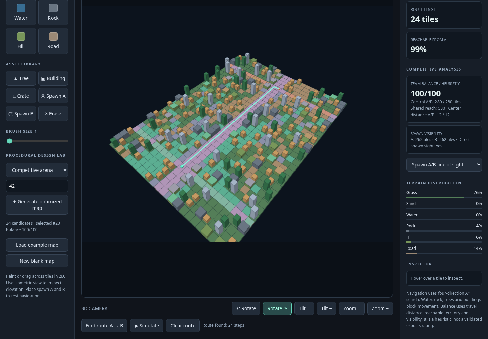

INDEPENDENT CONCEPT · AI-ASSISTED PROTOTYPE · 2026
WorldForge — Level Design Studio
Design, simulate and evaluate game environments.

01 / WORKFLOW
Interactive workflow
Paint terrain, place assets and spawns, inspect 3D projections, test routes and tactical overlays.
02 / IMPLEMENTATION
Implementation & limitations
Canvas, A* navigation, distance fields and seeded procedural generation. Heuristic map generation is not trained AI; balance scores are not validated by playtesting.
Project provenance
Prototype implementation and initial documentation were generated with ChatGPT assistance. User testing and independent validation are not claimed.